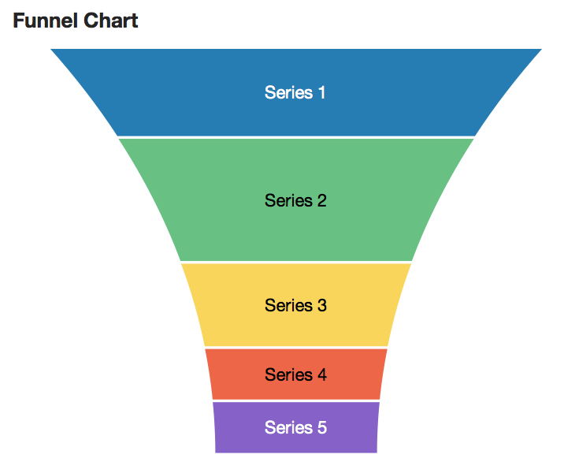

Screen Shot(s)

| Oracle Fusion Middleware Data Visualization Tools Tag Reference for Oracle ADF Faces 12c (12.2.1) E52773-01 |
dvt:funnelChart funnelChart funnel chart
UIComponent class: oracle.adf.view.faces.bi.component.chart.UIFunnelChart
Component type: oracle.dss.adf.chart.FunnelChart

A chart representing data related to steps in a process. The steps appear as vertical slices across a cone-shaped section which represent stages of a procees or target and actual values, showing levels by color.
<dvt:funnelChart value="#{chartDataSource.defaultFunnelData}" var="row">
<dvt:funnelDataItem label="#{row.series}" value="#{row.value}"/>
</dvt:funnelChart>
Animations can be enabled on data change or on initial display by adding af:transition as a child of this component. The following trigger types and transitions are supported:
dataChange: none (default), autodisplay: none (default), autoProperties of specific slices can be customized using EL expressions for attributes on dvt:funnelDataItem.
The legend can be hidden, positioned, or customized using dvt:chartLegend.
Number formatting options are available through dvt:chartValueFormat.
The fill effect of the data objects can be customized using the seriesEffect attribute, providing support for gradient, pattern, and solid fills.
The hideAndShowBehavior attribute allows the end user to filter the visible data set by clicking on the legend items.
The hoverBehavior attribute provides support for dimming of unrelated data objects as the user hovers on objects in the chart.
Popups and context menus can be displayed using af:showPopupBehavior, which is a supported child of dvt:chartDataItem.
Selection of data items can be enabled using the dataSelection attribute. Selection can be processed using selectionListener on the server or the selection event type on the client.
| Type | Phases | Description |
|---|---|---|
| org.apache.myfaces.trinidad.event.AttributeChangeEvent | Invoke Application, Apply Request Values |
Event delivered to describe an attribute change. Attribute change events are not delivered for any programmatic change to a property. They are only delivered when a renderer changes a property without the application's specific request. An example of an attribute change event might include the width of a column that supported client-side resizing. |
| Name | Type | Supports EL? | Description |
|---|---|---|---|
| attributeChangeListener | javax.el.MethodExpression | Only EL | a method reference to an attribute change listener. Attribute change events are not delivered for any programmatic change to a property. They are only delivered when a renderer changes a property without the application's specific request. An example of an attribute change events might include the width of a column that supported client-side resizing. |
| binding | oracle.adf.view.faces.bi.component.chart.UIFunnelChart | Only EL |
Specifies a binding reference to store a specific instance of UIFunnelChart from a backing bean. Set this attribute only to access code in a backing bean. For example, to reference a chart component in the sample managed bean, use the following code: |
| contentDelivery | String | Yes | Valid Values: whenAvailable, lazy, immediate Default Value: whenAvailable Specifies whether to fetch content with page load or after page load. |
| dataSelection | String | Yes | Valid Values: none, single, multiple Default Value: none Specifies the data selection mode for the chart. |
| emptyText | String | Yes | The text of the component when empty. |
| footnote | String | Yes | Specifies the footnote for the chart. |
| footnoteHalign | String | Yes | Valid Values: start, end, center Default Value: start Specifies the horizontal alignment of the chart footnote. |
| hideAndShowBehavior | String | Yes | Valid Values: none, withRescale, withoutRescale Default Value: none Specifies the hide/show behavior when clicking on the legend items. |
| hoverBehavior | String | Yes | Valid Values: none, dim Default Value: none Specifies the behavior when hovering over the chart data items. |
| id | String | No | Specifies the identifier for the component |
| inlineStyle | String | Yes | Style of the outer element (enclosing div) of the component |
| orientation | String | Yes | Valid Values: vertical, horizontal Default Value: vertical Specifies the orientation of the chart. |
| partialTriggers | String[] | Yes | The IDs of the components that should trigger a partial update. This component will listen on the trigger components. If one of the trigger components receives an event that will cause it to update in some way, this component will request to be updated too. |
| rendered | boolean | Yes | Default Value: true Specifies whether the component is rendered. |
| selectedRowKeys | org.apache.myfaces.trinidad.model.RowKeySet | Yes | The set of selected rows for this component. |
| selectionListener | javax.el.MethodExpression | Only EL | a method reference to a selection listener, the method is invoked when the selected nodes are changed. |
| seriesEffect | String | Yes | Valid Values: color, gradient, pattern Default Value: gradient Specifies the fill effect for the data items. |
| sliceGaps | Number | Yes | Default Value: 0 Specifies the presence and size of the gaps between slices. Valid values range from 0 (default) to 1, where 1 produces the maximum supported slice gaps. |
| styleClass | String | Yes | Sets a CSS style class to use for this component. |
| subtitle | String | Yes | Specifies the subtitle for the chart. |
| threeDEffect | String | Yes | Valid Values: on, off Default Value: off Specifies whether the chart is displayed with a 3D effect. |
| title | String | Yes | Specifies the title for the chart. |
| titleHalign | String | Yes | Valid Values: start, end, center Default Value: start Specifies the horizontal alignment of the chart title. |
| value | String | Yes | The data model for the chart - can be an instance of javax.faces.CollectionModel |
| var | String | No | Name of the EL variable used to reference each element of this collection. Once this component has completed rendering, this variable is removed (or reverted back to its previous value). |
| varStatus | String | No | Name of the EL variable used to reference the varStatus information. Once this component has completed rendering, this variable is removed (or reverted back to its previous value). The VarStatus provides contextual information about the state of the component to EL expressions. For components that iterate, varStatus also provides loop counter information. Please see the this component's documentation for the specific properties on the varStatus. The common properties on varStatus include:
|